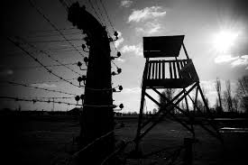
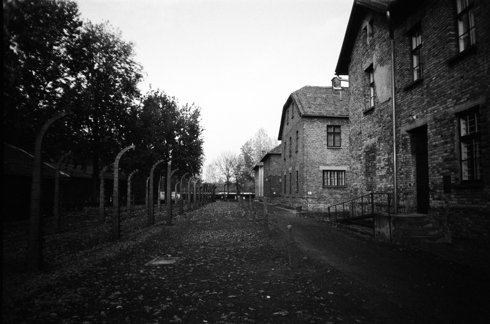
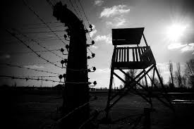
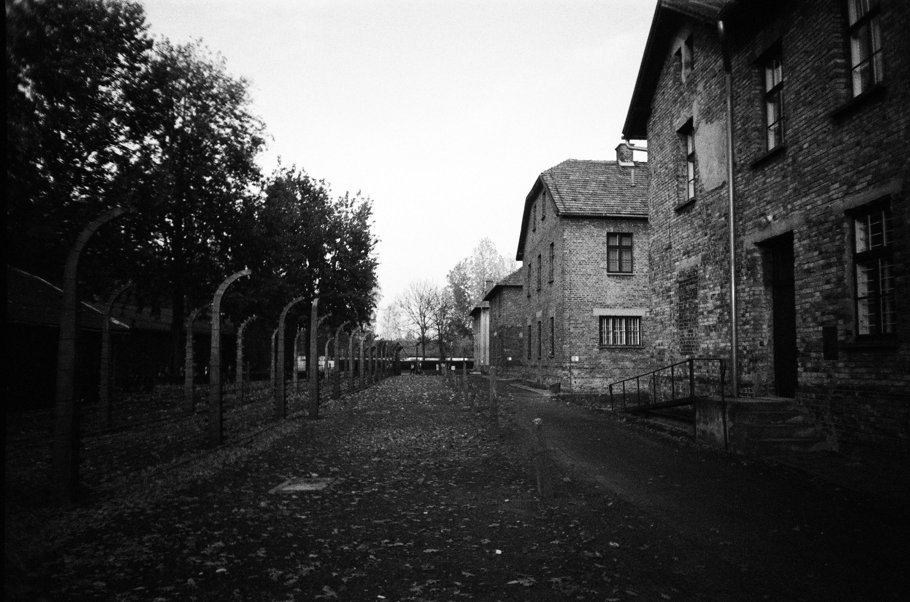

Auschwitz-Birkenau
Nazi Concentration And Death Camps
Introduction
Auschwitz concentration camp[a] was a complex of over 40 concentration and extermination camps operated by Nazi Germany in occupied Poland (in a portion annexed into Germany in 1939)[3] during World War II and the Holocaust. It consisted of Auschwitz I, the main camp
.......
s
Background
The ideology of Nazism combined elements of "racial hygiene", eugenics, antisemitism, pan-Germanism, and territorial expansionism, Richard J. Evans writes.[11] Adolf Hitler and his Nazi Party became obsessed by the "Jewish question".[12] Both during and immediately after the Nazi
.......
s
Auschwitz I
A former World War I camp for transient workers and later a Polish army barracks, Auschwitz I was the main camp (Stammlager) and administrative headquarters of the camp complex. Fifty kilometres (31 mi) southwest of Kraków, the site was first suggested in February 1940 as a quarantine camp for Polish prisoners by Arpad Wigandthe inspector of the Sicherheitspolizei (security police).
First mass transport
The first mass transport—of 728 Polish male political prisoners, including Catholic priests and Jews—arrived on 14 June 1940 from Tarnów, Poland. They were given serial numbers 31 to 758.[c] In a letter on 12 July 1940, Höss told Glücks that the local population was "fanatically Polish, ready to undertake any sort of operation against the hated SS men".
First mass transport of Jews
Historians have disagreed about the date the all-Jewish transports began arriving in Auschwitz. At the Wannsee Conference in Berlin on 20 January 1942, the Nazi leadership outlined, in euphemistic language, its plans for the Final Solution.[38] According to Franciszek Piper, the Auschwitz commandant Rudolf Höss offered inconsistent accounts after the war.
 


